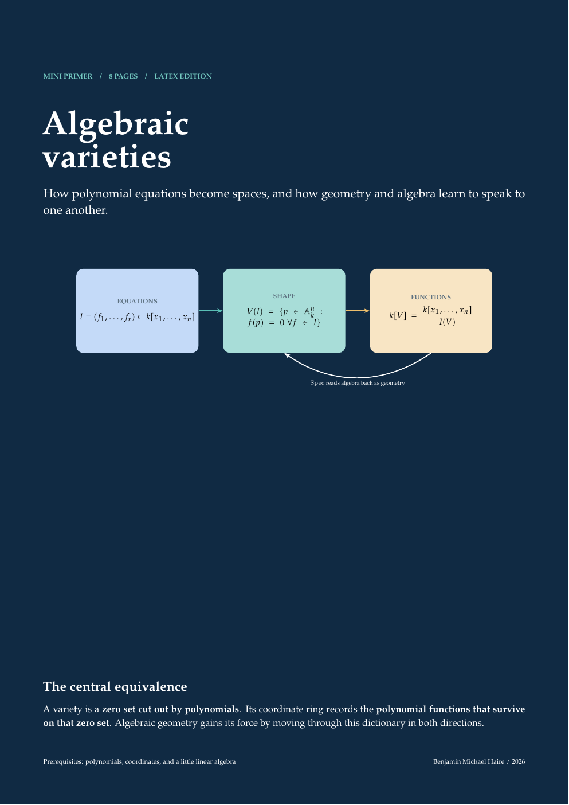

Eight-page visual primer
Algebraic varieties
See how polynomial equations become spaces, why singularities matter, and how coordinate rings let geometry and algebra answer one another.

Interactive companion
Watch smoothness fail
Vary the coefficients in y²=x³+ax+b. A curve becomes singular exactly when its cubic acquires a repeated root.
Keep the complete primer
Eight concise pages covering zero sets, ideals, singularities, coordinate rings, maps, and projective closure.